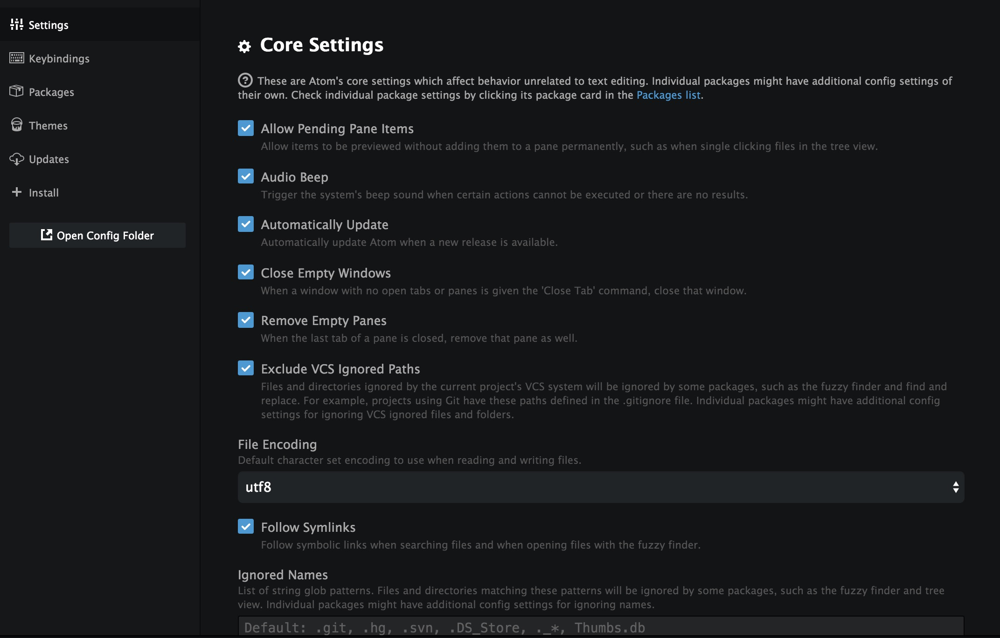
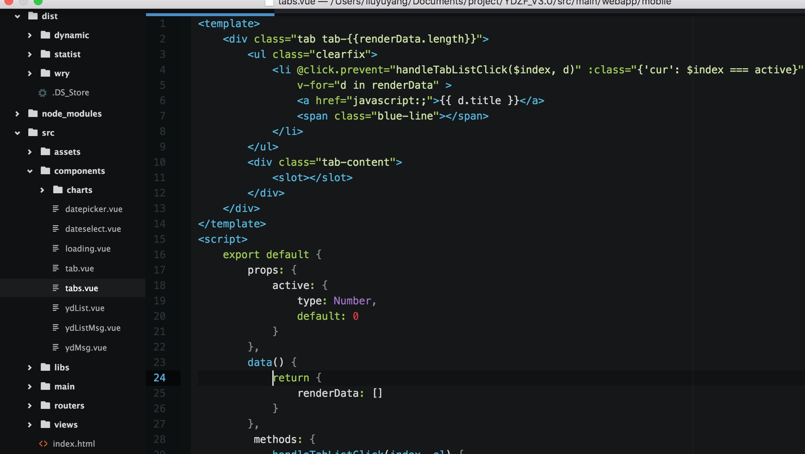
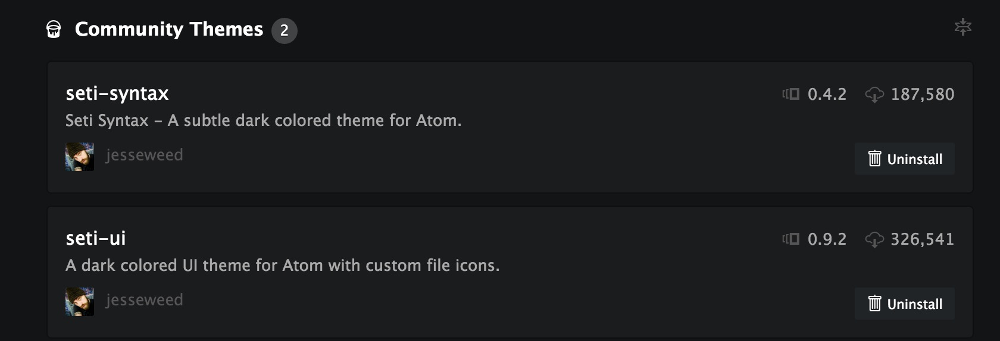
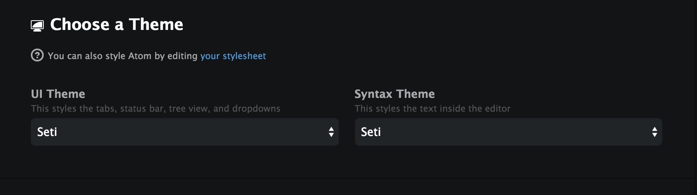

最近老在各大社区上看到讨论atom编辑器，自己就去down下来试了，一下，觉得还真不错，这几天把一些配置和插件包都搞好了，正式从sublime转向atom了，这篇博客就重点介绍一下atom的使用和一些基本的插件和主题.
atom是由github团队基于web开发的，由coffee和less编写，所它的插件也是以 web技术编写，并且自定义less文件修改样式，以后我觉得需要哪些功能大可以自己开发一个插件，这个是我转向atom的一个重大原因,好了不扯淡了，开始介绍atom的基本使用了。
sublime的无缝过渡
atom本身就拥有了sublime的几个重要的功能， 例如： Goto Anything 、Goto Symbol、Goto Line、命令面板等等，就连快捷键也是一模一样的！所以对于用惯了sublime的同学，切换到atom是不会觉得不适应的。 啥？没有用过 sublime, 那你自己补补这边文档吧： 官方手册：Atom 基础使用
atom编辑器上用快捷键 cmd+, (我的是mac， window上用ctrl+,)，可以看到这个页面

左边这个菜单我简单介绍下
- setting 一些核心的设置，什么tabsize， 文件编码， 行高字体等等。。根据自己的喜好去设置就好啦
- keybinds 快捷键的设置页面，如果需要修改一些快捷键，改这里就好啦
- packages 这里是你所有的安装的插件， 你可以进行卸载和设置为不可用的操作，或者 插件本生功能的设置
- themes 所有安装的主题
- updates 如果插件或者主题有新的版本了，就会出现在这里
- install 这里用来安装atom的插件或者主题，类似于sublime的package control
插件和主题的安装
atom 的插件和主题的安装都在刚才介绍的 install菜单,我们搜索插件或是主题的名称，点击安装就可以了，这里我介绍一些基础的主题和插件
setui
这个是去年最流行的主题，暗黑酷炫流

atom 的主题安装和sublime 一样，需要对页面主题和编辑区域两个都做安装， 所以我们需要安装 seti-synax 和 set-ui

安装成功后去 Themes 里设置一下即可

atom还支持自定义 less文件改变样式，有兴趣的朋友可以去研究下
代码开发需要的插件
- atom-beautify 可以格式化几乎所有语言的代码，比较适合从别处粘贴代码后进行格式化，或者平时不太注意代码样式的人使用。快捷键（ctrl+alt+B）
- linter Linter 是一个代码纠错的基础设施，安装了 Linter 后你就可以去安装具体语言的纠错插件，为你的代码提供实时的语法检查和风格检查，针对不同语言还要安装一些 插件，例如 lint-eslint， linter-csslint
- autocomplete-paths 自动补全文件路径
- highlight-selected 当你选择了一个单词，这个插件会在编辑器中高亮显示所有这个单词出现的地方（就像你进行搜索时一样），在修改代码时非常有用。
- todo-show 该插件会帮你找到代码中所有出现 TODO, FIXME 等标记的地方显示成一个表格，供你逐个解决。(社区推荐，但是我还没用过这个)
- docblockr 方法上生成注释 输入 /** 之后 敲enter即可生成注释模板
- editorconfig 保证不同ide之间的而编码风格一致
- file-type-icons 根据文件类型显示一些icons 很美观
web开发插件
- atom-ternjs ternjs 是一个非常专业的 JavaScript 静态分析器，基于对代码的静态分析，可以在编码的时候给出对象的属性、函数的参数的提示。还可以基于静态分析查找标识符的定义、搜索标识符的引用、重命名标识符。该插件的正常工作需要设置一些配置项，详见其主页。
- javascript-snippets js的推提示
- jQuery jquery的提示插件
- linter-eslint 配合eslint代码检查
- linter-csslint css代码检查插件
- pretty-json json格式化/压缩插件
版本控制 git
- git-plus 可以直接在 Atom 的命令面板中运行 git commit, git push 等常用命令，可以使用 Atom 来编辑 Commit Message, 查看 Diff, 查看文件历史等。有了这个插件就不需要离开 Atom 去 Shell 或者 GUI 来操作 Git 了。
git操作我都是再命令行中完成的，这里就不多做介绍啦
最后
atom再界面上要比sublime要精美一些，我看中的是它是基于web开的，提供的高度的自定制功能，也标志着软件ui web化已经是越来越平常了，WEB前端工程师都要向客户端工程师开发，我们的考虑的不在是一个页面，而是一个应用,任重而道远啊,
最后，atom也开源了基于web开发客户端程序的技术electron,我最近也在使用这个配合vue.js开发一个自己用的app.